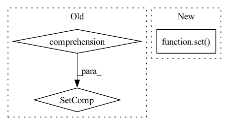

Pattern ID :10206
Before Change
if strict:
modifier_keys = {key for key in modifiers_index.keys()}
state_dict_keys = {key for key in state_dict.keys()}
diff = modifier_keys.symmetric_difference(state_dict_keys)
if diff:
raise IndexError(
f"Found extra keys: {state_dict_keys - modifier_keys} "After Change
modifiers_index = {mod.identifier(): mod for mod in self.modifiers}
else:
if strict:
modifiers_stages = set( self.modifiers.keys())
state_dict_stages = set(state_dict.keys())
diff = modifiers_stages.symmetric_difference(state_dict_stages)
if diff:
raise IndexError(In pattern: SUPERPATTERN
Frequency: 4
Non-data size: 3
Instances Fragment ID: 36003364
Project Name: neuralmagic/sparseml
Commit Name: 8db0994bd39b744ad6d4edde07a2d63cabf803bd
Time: 2022-02-24
Author: bfineran@users.noreply.github.com
File Name: src/sparseml/pytorch/optim/manager.py
M Class Name: ScheduledModifierManager
N Class Name: ScheduledModifierManager
M Method Name: load_state_dict(3)
N Method Name: load_state_dict(3)
M Parent Class: BaseManager,Modifier
N Parent Class: BaseManager,Modifier
M File Name: src/sparseml/pytorch/optim/manager.py
N File Name: src/sparseml/pytorch/optim/manager.py
M Start Line: 311
M End Line: 315
N Start Line: 321
N End Line: 341
Before Change
for step in trial["steps"]:
try:
v_metrics = step["validation"]["metrics"]["validation_metrics"]
return {metric for metric, value in v_metrics.items() if is_number(value)}
except Exception:
pass
return set()After Change
metrics = workload.validation.metrics
if not metrics:
continue
return set( metrics.keys())
return set()
Fragment ID: 36003360
Project Name: determined-ai/determined
Commit Name: 1b3e764118242255b4f3fb32c2a969cf2ae752c5
Time: 2022-03-15
Author: nick.doiron@hpe.com
File Name: harness/determined/cli/experiment.py
M Class Name: AnonimousClass
N Class Name: AnonimousClass
M Method Name: scalar_validation_metrics_names(1)
N Method Name: scalar_validation_metrics_names(1)
M Parent Class:
N Parent Class:
M File Name: harness/determined/cli/experiment.py
N File Name: harness/determined/cli/experiment.py
M Start Line: 516
M End Line: 524
N Start Line: 567
N End Line: 574
Before Change
Tests that the schema of the fake database is always the same as
the real one.
real_tables_names = {
table_name for table_name in real_sqlalchemy_engine.table_names()
}
fake_tables_names = {
table_name for table_name in fake_sqlalchemy_engine.table_names()
}
After Change
the real one.
real_tables_names = set(real_sqlalchemy_engine.table_names())
fake_tables_names = set( fake_sqlalchemy_engine.table_names())
assert real_tables_names == {"articles", "sentences"}
assert real_tables_names.issubset(fake_tables_names)
Fragment ID: 36003357
Project Name: bluebrain/search
Commit Name: adb6e49d01db5e34f8816ebdc6b43d161f40e348
Time: 2021-05-26
Author: Stannislav@users.noreply.github.com
File Name: tests/test_database/test_cord_19.py
M Class Name: TestDatabaseCreation
N Class Name: TestDatabaseCreation
M Method Name: test_real_equals_fake_db(3)
N Method Name: test_real_equals_fake_db(3)
M Parent Class:
N Parent Class:
M File Name: tests/test_database/test_cord_19.py
N File Name: tests/test_database/test_cord_19.py
M Start Line: 231
M End Line: 236
N Start Line: 231
N End Line: 232
Before Change
raise TypeError("n must be either an integer or a float")
counter = Counter(self.triples[:, 1])
return {
relation
for relation, _ in counter.most_common(n)
}
def get_idx_for_entities(self, entities: Collection[str], invert: bool = False):
Get np.array indices for triples with the given entities.
entities = np.asanyarray(entities, dtype=self.triples.dtype)After Change
uniq, counts = self.mapped_triples[:, 1].unique(return_counts=True)
top_counts, top_ids = counts.topk(k=n, largest=True)
return set( uniq[top_ids].tolist())
def entities_to_ids(self, entities: Union[Collection[int], Collection[str]]) -> Collection[int]:
Normalize entities to IDs.
return _ensure_ids(labels_or_ids=entities, label_to_id=self.entity_to_id) Fragment ID: 36003356
Project Name: pykeen/pykeen
Commit Name: a007a273ff146107fd1b0c099d561c7b7279965a
Time: 2020-12-10
Author: berrendorf@dbs.ifi.lmu.de
File Name: src/pykeen/triples/triples_factory.py
M Class Name: TriplesFactory
N Class Name: TriplesFactory
M Method Name: get_most_frequent_relations(2)
N Method Name: get_most_frequent_relations(2)
M Parent Class:
N Parent Class:
M File Name: src/pykeen/triples/triples_factory.py
N File Name: src/pykeen/triples/triples_factory.py
M Start Line: 466
M End Line: 474
N Start Line: 595
N End Line: 597